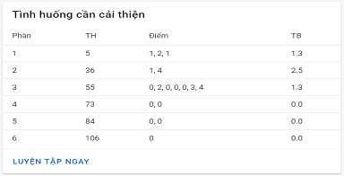

Theo dõi quá trình
Dễ dàng theo dõi quá trình luyện tập và sự tiến bộ theo thời gian bằng các con số thống kê, biểu đồ.
Phân tích lỗi sai
Nhanh chóng phát hiện và sửa chữa những lỗi sai trong quá trình luyện tập.
Lên kế hoạch luyện tập
Với SimuDrivePro, chúng tôi sẽ giúp bạn lên một kế hoạch để sớm đạt được những mục tiêu.
Cung cấp tài liệu
Bạn sẽ dễ dàng tiếp cận những tài liệu, hướng dẫn để xử lí chính xác các tình huống trong bài thi.